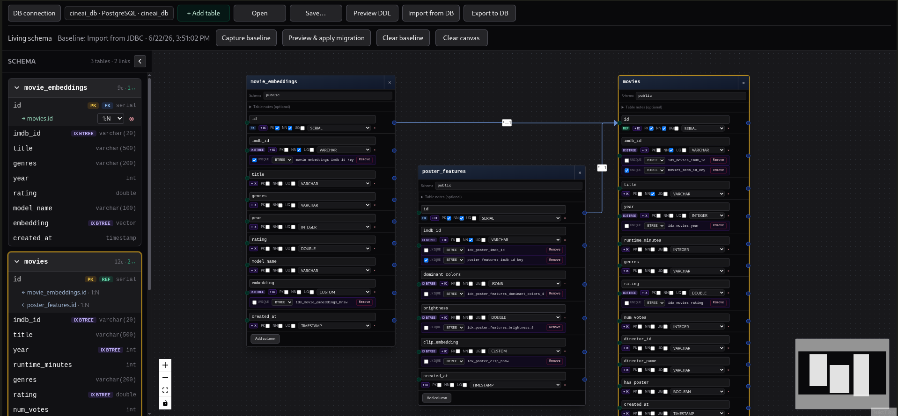

Draw ERDs on a canvas, import from live databases, preview migration SQL, and apply incremental changes — without leaving your IDE.

DB Blueprint stays out of your way. One tool window, your whole schema workflow.
The diff engine produces the smallest set of statements needed — column renames, type changes, index updates, FK actions. A table is never dropped and recreated when an ALTER will do.
Pre-flight checks run against your live data before a single statement executes. A clear message explains what is wrong and how to fix it — not a raw database error.
Each dialect is implemented independently against the engine's own documentation — not adapted from another dialect's SQL.
DB Blueprint is in active development. Every release brings meaningful improvements based on real use.
Settings → Tools → DB Blueprint, fill in host / port / database / user, point to your JDBC driver jar, and click Test connection. The plugin can auto-detect drivers already installed by your IDE, or download one from Maven Central with the Download button..jar file..dbdesign file or any project XML.